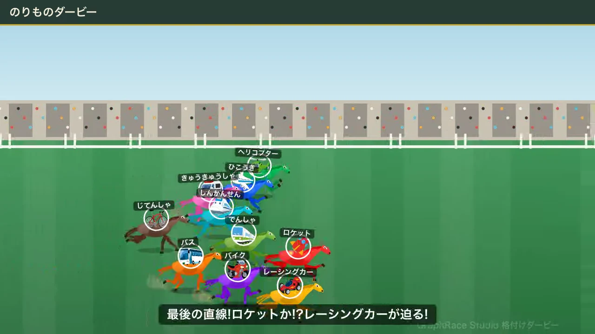
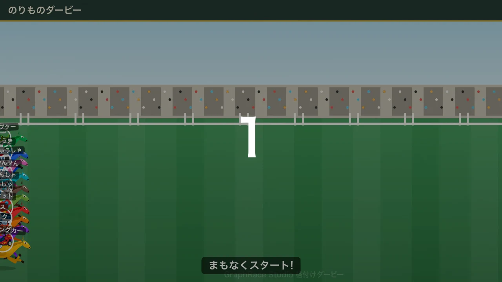
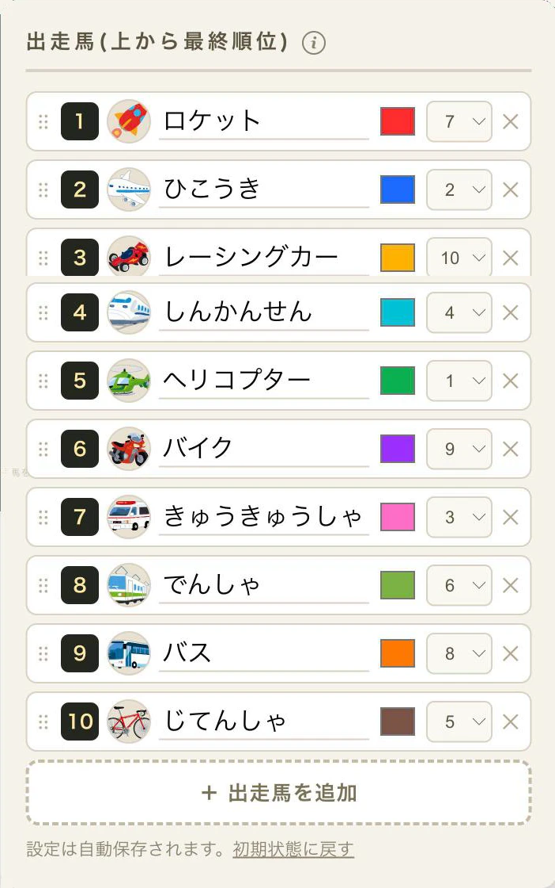
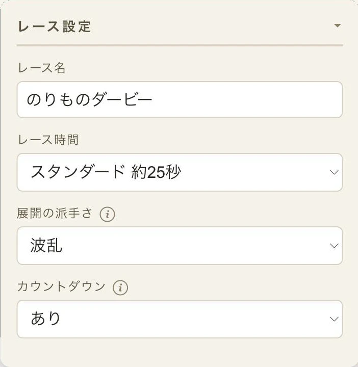
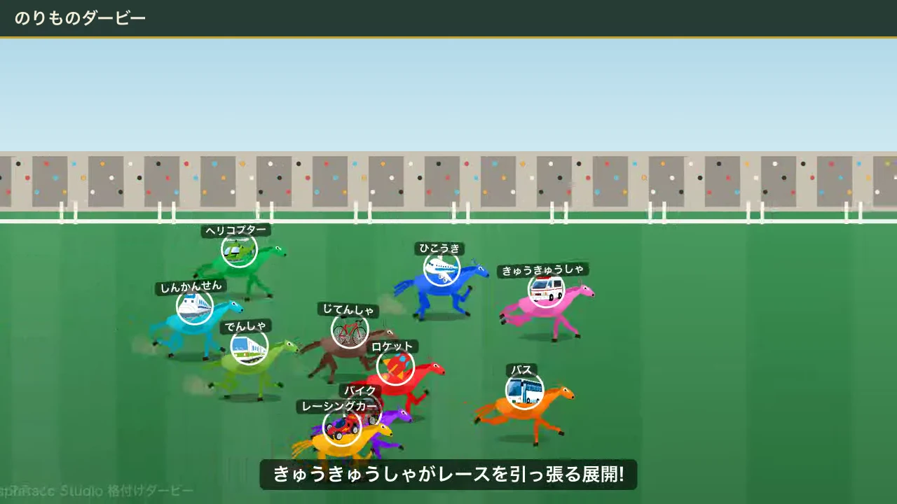
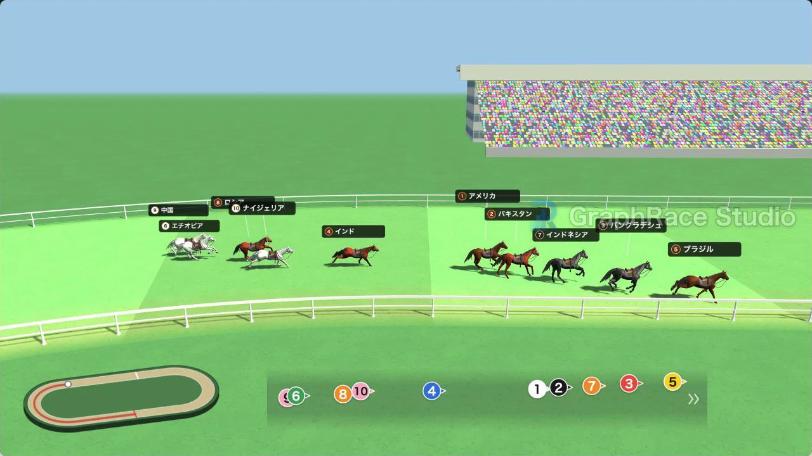
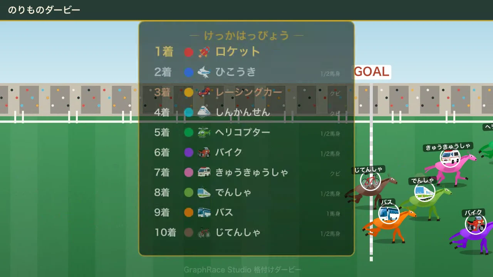

盛り上がるクイズ動画の作り方！幼稚園・小学校のクラス会で使える正解発表アイデア

幼稚園・小学校のクラス会やお楽しみ会でクイズ大会を企画したものの、正解発表が「はい、正解はこれです」だけで終わってしまい、いまひとつ盛り上がらなかった、という経験はありませんか。
この記事では、年齢に合わせたクイズ動画の作り方の基本と、パワーポイントやスマホアプリだけでできる定番の演出テクニックに加えて、格付けダービーを使った「レース形式」の正解発表という選択肢を紹介します。
格付けダービーは、先生や保護者があらかじめ正解の着順を決めておくことで、馬がゴールするまでの展開をハラハラしながら楽しめる無料ツールです。道中の展開は毎回変わるのに結果は必ず決めたとおりになる、という性質を生かせば、単純な発表よりずっと盛り上がる正解発表が作れます。
「格付けダービー」は当サイト（GraphRace Studio）が開発・運営している無料ツールです。この記事では自社ツールを紹介していますが、パワーポイントや他の無料アプリなど、目的に合った選択肢もあわせて紹介します。ツールの使用は必須ではありません。
盛り上がるクイズ動画に共通する「型」
年齢やクイズ形式が変わっても、盛り上がるクイズ動画の構成は共通しています。1問ごとにこの4つの流れを繰り返すだけで、間延びせずテンポよく進められます。
- 出題問題文や写真・音声を提示します。何を答えればいいか一目で分かるようにします。
- シンキングタイム考える時間を数秒〜十数秒とります。カウントダウン音を入れると集中しやすくなります。
- 正解発表効果音やタメの間、色や文字サイズの変化で正解を強調します。ここが記事の後半で詳しく解説する部分です。
- リアクション拍手や歓声の効果音、次の問題への一言をはさみ、テンポを保ちます。

定番のクイズ形式5選
すべてを使う必要はありません。対象年齢とかけられる準備時間から、合うものを選んでください。
| 形式 | 内容 | 準備のしやすさ |
|---|---|---|
| 4択クイズ | 選択肢を4つ用意し、正解を1つ選ばせる定番形式 | スライドと文字だけで作れる |
| ○×クイズ | 出題に対して○か×かを答えるシンプルな形式 | 文字が読めない年齢でも楽しめる |
| モザイク解除クイズ | 写真にモザイクをかけ、少しずつ解除しながら当てさせる | 動画編集アプリでの加工が必要 |
| イントロクイズ | 曲や音の一部を流し、何の曲・音かを当てさせる | 音源の著作権に注意が必要 |
| フリップ（早押し）クイズ | 手元のボードに答えを書き、一斉に見せ合う | 実演中心で動画編集は最小限 |
横にスクロールできます
年齢別の目安
同じ形式でも、年齢に合わせて文字量と尺を調整すると伝わりやすくなります。
| 年齢層 | 文字・言葉づかい | 尺の目安 | 向いている形式 |
|---|---|---|---|
| 幼稚園児 |
|
1問30秒前後 全体2〜3分 |
|
| 小学校低学年 |
|
1問30〜45秒 全体3〜5分 |
|
| 小学校中〜高学年 |
|
1問45秒〜1分 全体5〜8分 |
|
横にスクロールできます
正解発表を盛り上げる演出テクニック
パワーポイントやスマホの動画編集アプリだけでも、次の工夫で正解発表の印象は大きく変わります。
- 効果音を入れる：ドラムロールや「ジャジャン」のような効果音を正解の直前・直後に入れる
- タメを作る：正解を出す直前に1〜2秒、画面をほとんど動かさない間をとる
- 正解を強調する：文字を大きく、色を変えて目立たせる
- BGMを切り替える：シンキングタイム用の曲から、発表用の曲に切り替える
- 1問ずつ見せる：まとめて発表せず、1問ごとに区切って見せる
校内・社内での上映だけなら市販曲も使える場合がありますが、SNSや動画サイトに公開するなら著作権フリー素材が安全です。詳しくは後述のFAQで解説します。
格付けダービーで作る「レース形式」の正解発表
定番の演出に加えて、正解発表そのものをレースにしてしまう方法もあります。格付けダービーは、着順を決めて出走馬を登録するだけで、競馬中継風のランキング発表動画が作れる無料ツールです。
- 選択肢や候補を出走馬に見立てる：4択クイズならA〜Dの4頭、ランキングクイズなら候補の数だけ登録
- 正解の着順をあらかじめ設定：出走馬欄はドラッグで並べ替えるだけで最終着順を指定できる
- 展開は毎回ランダム、結果は必ず設定どおり：子どもたちは最後までどの馬が来るか分からず応援できる
- 「展開の派手さ」で盛り上がり具合を調整：おだやか・ふつう・波乱・大波乱の4段階から選べる。年齢を問わず「波乱」を選ぶと道中で順位が入れ替わり、一番盛り上がる
- 「展開シード」を変えると道中だけ変化：同じ着順のまま、毎回違うレース展開が作れる
- 2D「競馬風」と3D「リアル競馬風」をワンクリックで切替：出走馬やレース設定は共通のまま表現だけ変えられる
- 幼児・低学年には馬の色をはっきり変える：カラーパターン「ビビッド」を使うと、名前が読めなくても色で応援先が分かる
- WebM形式でその場で録画・保存できる：作った動画はそのままクラスで再生できる

上の例では、正解の順位は上から固定したまま、出走枠だけをばらばらに割り振っています。こうすると、スタート地点からは順位の予想がつかないので、最後まで結果が読めません。

年齢別の使い分け
- 幼稚園児：2D「競馬風」がおすすめ。画像アイコンを馬に表示でき、色も「ビビッド」で個別に変えられるので、文字が読めなくても絵と色で応援先が分かる
- 小学校低学年：2D「競馬風」のままでOK。画像アイコンや色分けで見分けやすく、文字が読めてきたら色分けは任意に
- 小学校中〜高学年：3D「リアル競馬風」で臨場感アップ。馬名表示だけで十分区別できる



- 4択〜12択クイズの正解発表
- 事前に集計したアンケート結果の発表
- 山の高さランキングなど、事実に基づく学習クイズ
- 「先生あてクイズ」など答えがすでに決まっている企画
- その場で投票して即結果を見せたい企画
- 子どもの操作で展開そのものを変えたい参加型企画
着順の決め方や2D「競馬風」・3D「リアル競馬風」の使い分けなど、格付けダービーの詳しい操作は競馬風の順位発表動画「格付けダービー」の作り方で解説しています。
使うツールの比較
クイズ本編と正解発表、それぞれに向いたツールをまとめました。
| ツール | 向いている用途 | 費用・準備 |
|---|---|---|
| パワーポイント | 4択クイズ、○×クイズなど文字中心のスライド | 学校・家庭にあれば追加費用なし |
| Canva | デザインテンプレートを使った見栄えのよいスライド | 無料プランあり。テンプレートは一部有料 |
| CapCut | モザイク解除、イントロクイズなど動画加工が必要な形式 | 無料。スマホ・PC両対応 |
| 格付けダービー | 正解発表をレース形式で演出したいとき | 無料・登録不要・ブラウザで完結 |
横にスクロールできます
すぐ使えるお題例
思いつかないときは、この中から選んでアレンジしてみてください。
- 好きな給食メニューアンケートの結果発表（事前集計）
- クラスの誕生日月の人数ランキング
- 先生の好きな○○あてクイズ
- 世界一高い山・大きい動物など、学習につながるランキングクイズ
- 「このシルエットは誰でしょう」クラスメイトあてクイズ
よくある失敗と対策
- 間延びする：1問の尺を年齢別の目安より長くしない。迷ったら削って短くする
- 音が小さい・聞こえない：会場のスピーカーで事前に音量を確認しておく
- 正解が分かりにくい：文字サイズと色を変える、発表前にタメを作るなど演出を足す
- 幼児に文字が多すぎる：文字を減らし、イラストや色分けに置き換える
- 著作権のある音楽を公開動画に使ってしまう：校内・社内での上映だけなら、非営利・無料・出演者に報酬なしの条件で許諾なく使える場合が多い（著作権法38条）。ただしSNSや動画サイトへの公開・配信はこの例外の対象外なので、公開する動画は著作権フリー素材に置き換える
よくある質問（FAQ）
何歳から楽しめますか？
年齢別のコツに沿って文字量や尺、クイズ形式を調整すれば、幼稚園児から小学校高学年まで幅広く対応できます。文字を読ませない○×クイズなら年少・年中クラスでも楽しめます。
先生や保護者一人でも作れますか？
作れます。4択クイズや○×クイズはスライドと文字だけで準備でき、正解発表を格付けダービーで演出する場合も、着順を決めて登録するだけなので特別な編集スキルは不要です。
子どもの実名や顔写真を動画に使っても大丈夫ですか？
学校・園ごとの個人情報の取り扱い方針に従ってください。クラス内での上映に留めるか、外部公開・SNS投稿もする場合は、事前に保護者の同意を得ておくと安心です。
著作権のある音楽や効果音を使ってもいいですか？
校内・社内などで非営利・無料・出演者に報酬なしの条件で「上映するだけ」なら、市販の楽曲を許諾なく使える場合があります（著作権法38条）。一方、動画をSNSや動画サイトに公開・配信する場合はこの例外の対象外になるため、著作権フリーの音源・効果音を使うのが安全です。
格付けダービーを使うのに登録や費用は必要ですか？
不要です。会員登録もインストールも必要なく、ブラウザで開くだけで無料で使えます。着順（正解）を決めて出走馬を登録し、再生するだけでレース形式の正解発表動画が作れます。
まとめ
盛り上がるクイズ動画は、特別な編集スキルがなくても、年齢に合った形式選びと正解発表の演出だけで大きく変わります。
- 出題→シンキングタイム→正解発表→リアクションの型を1問ごとに繰り返す
- 年齢に合わせて文字量・尺・形式を変えると伝わりやすさが大きく変わる
- 格付けダービーを使えば、着順を決めるだけでレース形式の正解発表が作れる
次のクラス会・お楽しみ会の企画では、いつもの正解発表を格付けダービーのレース形式に変えてみてください。